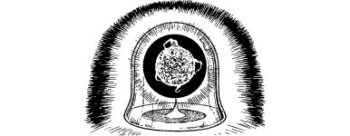

188
‘This device,’ says the Beholder, pointing with pride at the huge, fiery vessel that dominates the gallery, ‘is a Dimension Door. It will enable you to pass directly into the realm of Vhozada through a rent in the fabric of the Daziarn.’ You stare in awe at the sun-like ball trapped within the vessel and try to comprehend the secret sorceries that enable such a thing to exist.
‘You will come to learn that the laws which govern my world are quite unlike those which shape Aon. Here, time and space can be manipulated by those with power enough to craft them to their needs,’ he says, in answer to your thoughts. He wills his servant to carry him to another globe which stands close by. There he manipulates a bank of crystals and gradually a swirling circular grey shadow forms on the glassy surface of the vessel. It shimmers and you find that you cannot fully focus your eyes on it. ‘Step forward and enter,’ commands the Beholder. ‘The door to Vhozada is open.’
{kind=link}

Your skin prickles and your stomach churns, but you fight to control your fear by relying solely on your Kai skills. You sense that the Beholder is speaking the truth: the grey portal does lead to the realm of Vhozada. And so, with great trepidation, you bid him farewell and step into the void.